Royal Shuffles
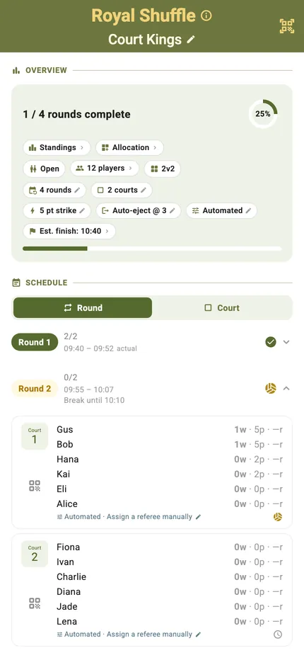
Win and you stay on. Lose and you go straight to the back of the queue. Points only count while you are holding the court, so the pressure sits with whoever is winning — which is what makes it hard to stop playing.
TournaQ keeps the queue, rotates the challengers, counts the strikes and tracks who has been on court longest. You set the strike target and the rotation rule; the app handles who is up next so nobody has to referee the order.
Best for
- High-energy sessions where the queue never stops moving
- Mixed-ability groups — a strong pair holding court raises everyone's level
- Warm-ups and open sessions where people arrive and leave throughout
Finding it in the app
Royal Shuffles lives under Single Competitions & Socials in the TournaQ Arena. The hub keeps every session you have run, so last week's is two taps away.

The Arena
Every format the app can run, grouped by the kind of session it suits. The number on a card is how many of those you have run.
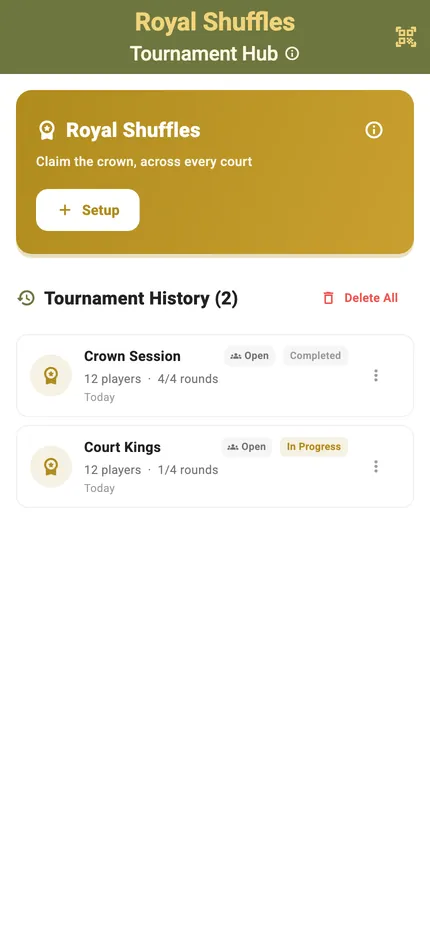
The Royal Shuffles hub
New Tournament starts a session. Below it sits your history, each entry showing the date, the player count and how far it got.
Setting it up
Set the strike target and how often the court swaps, and TournaQ works out the rounds, the queue and the finish time.
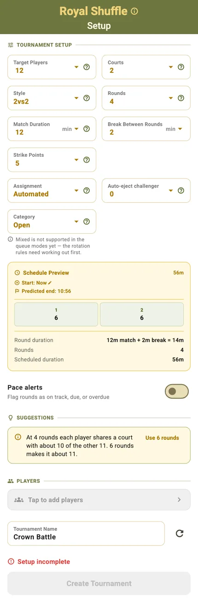
Strikes, swaps and the clock
The strike target decides how long a pair can hold the court before the sides change, and the swap rule decides how the queue feeds in. Both sit alongside the usual players, courts and match duration.
Every field feeds the Schedule Preview, so the predicted finish moves as you change your mind — no working out how many rounds fit in the time you have.
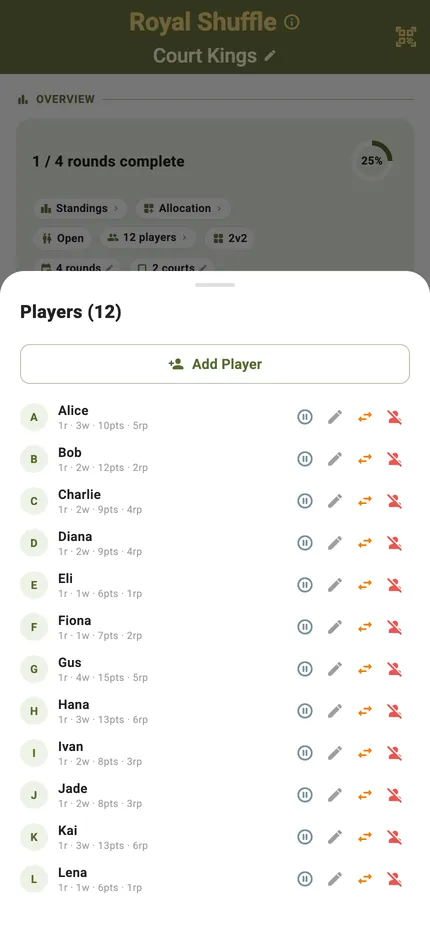
Who is playing
Add players by name, pull them from your saved Players hub, or fill the session with random names to try the format out. The list stays editable all the way through.
The session at a glance
One screen carries the session: how far along you are, who is holding each court, who is queuing, and when you will be done.
Progress and settings in one row
Rounds complete, a progress ring, and a row of pills — standings, allocation, players, format, strike target, swap rule and estimated finish. A pill with a pencil can still be changed; one with a lock was fixed when play started.
Round by round, or court by court
The schedule groups by round out of the box. Switch it to Court and each court lists its own sequence — useful when several courts run at once and each has its own king.
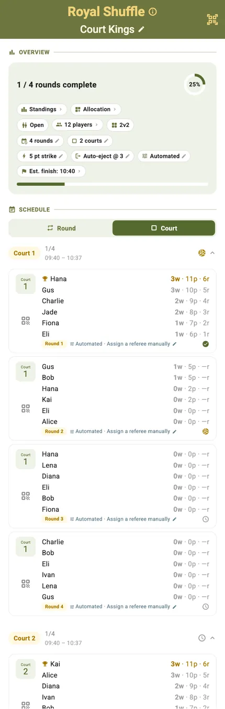
Who is on which court
The allocation grid lays every round against every court, so you can see the shape of the session and spot a player who has spent the evening in the queue.
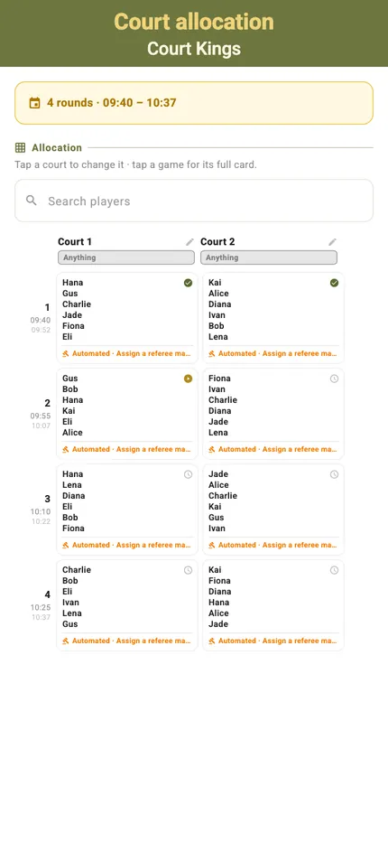
Scoring a match
The court card shows who is on, who is challenging and who is up next, with the scoring controls under your thumb.
Portrait
The court, the challengers and the queue on one screen, with the session timer in the header. Tap to score, undo to take it back, and the strike count updates as you go.

Landscape
Turn the phone and the same controls rearrange for a net post or a table at the side of the court. Nothing is hidden — the layout changes, the functions do not.
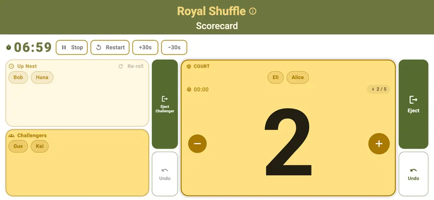
Game won
When a game is won TournaQ says so, banks the points and moves the queue on. The court knows immediately who stays and who steps off.
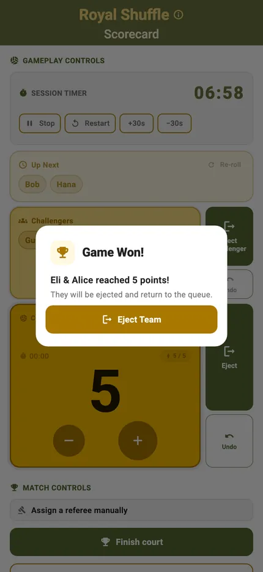
Keeping the queue honest
The queue is the format. TournaQ runs it, and lets you override it when the evening does not go to plan.
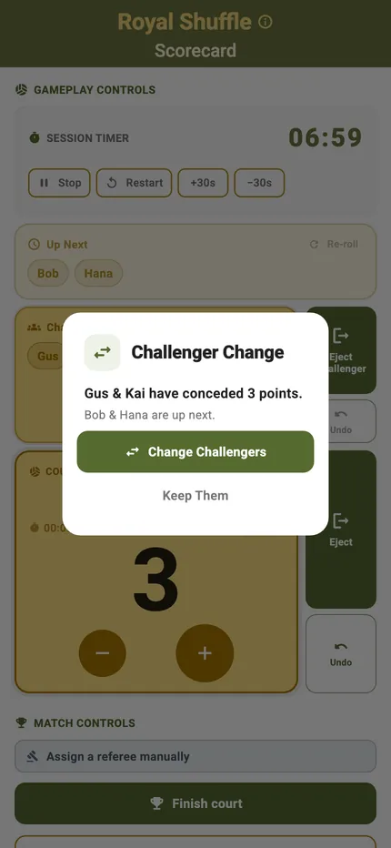
Challengers rotate automatically
When a game ends the next challengers come on and the card tells you who they are. Nobody has to remember whose turn it was, and nobody quietly skips the queue.

Or change them yourself
Somebody is tying a shoelace, somebody else has just arrived. Swap the challenging pair by hand and the queue picks up from there without losing anyone's place.
When the session changes
People arrive late, roll an ankle, or have to leave at six. A session that cannot absorb that is one someone ends up re-planning on paper.
Someone needs a break
Put a player on a break for one round or until you bring them back. Their seat becomes an open placeholder so the court still plays, and every point they have already banked stays with them.

And comes back
Return them and they slot back into the queue. Nothing is reshuffled and nobody else's position moves.

Someone steps in
A stand-in can take an open seat on a live court, so a round runs on time instead of playing three against four while you find somebody.

Standings, live and final
Points are banked while you hold the court, so the ranking rewards staying on — and everyone's record is individual.
Live standings
Every player with their points, games played and win record, ordered as it stands right now. Players check it between rounds without asking anyone.
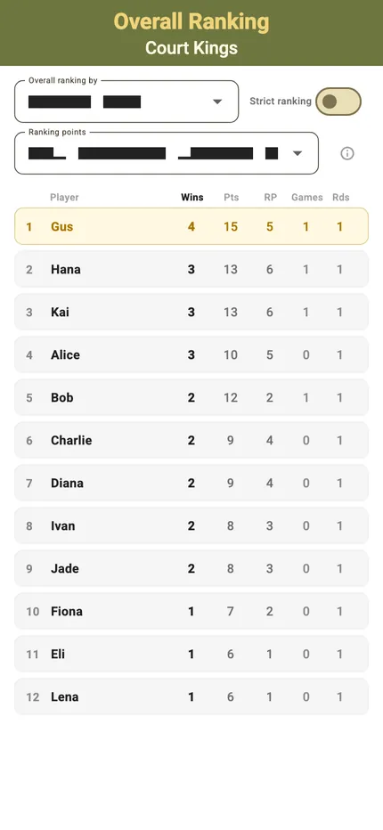
Final rankings
When the session ends the table closes with the winner at the top: whoever held the court longest and scored most while they were on it.
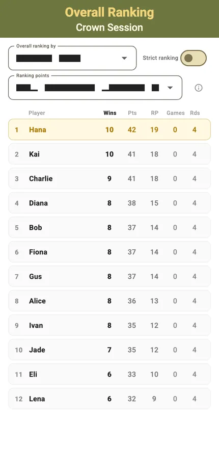
The finished session
The schedule keeps every result. A completed session stays in the hub with all its scores, so a question about last month's session has an answer.
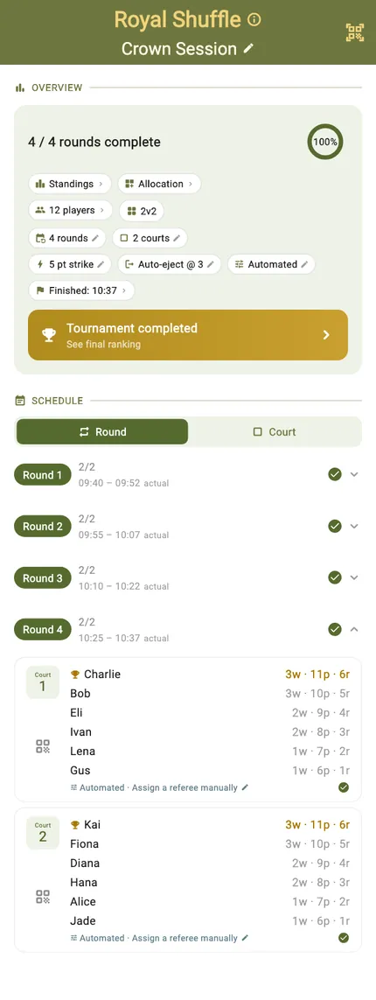
Start to finish
- Open the TournaQ Arena and pick Royal Shuffles — still labelled King of the Court in the app.
- Tap New Tournament.
- Set the players, courts and match length, then the strike target and the swap rule.
- Add the players and name the session.
- Tap Create Tournament.
- Open the first court and start the timer.
- Tap to award each point; undo takes back the last one.
- Finish the game — the winner stays on and the next challengers rotate in.
- Put anyone who needs it on a break, or swap the challengers by hand.
- Play out the rounds and read the final rankings.
Have a question about Royal Shuffles, spotted something missing, or want to suggest an improvement?